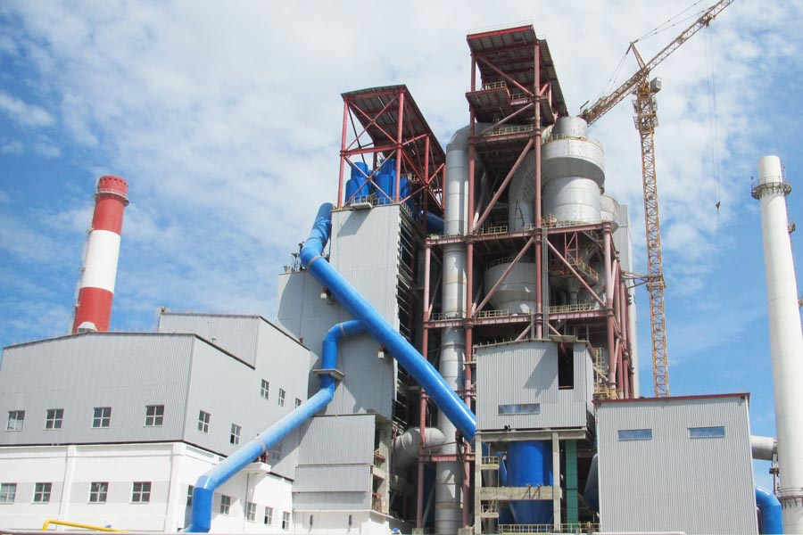

- Home >
- production line >
- Pozzolana Cement Production Line

Construction waste crushing production line

Mobile construction waste crushing station for urban construction waste crushing.
Pozzolana Cement Production Line
Cement Production Process
Pozzolana Cement Production Line is the production of cement equipment consisting of a series of Pozzolana Cement Production Line equipment. Mainly by crushing and pre-homogenization, homogenization raw material preparation, preheat decomposition, sintering cement clinker, cement grinding and packaging processes form.
Process parameters
In the process of Pozzolana Cement Production Lines, each producing one ton of Portland cement grinding at least 3 tons of materials (including raw materials, fuel, clinker, mixed materials, gypsum), according to statistics, the dry-process cement production line grinding operation needs power consumption accounts for about 60% of the whole power plant, where raw material grinding more than 30%, accounting for about 3% of the coal mill, cement grinding about 40%. Therefore, a reasonable choice of grinding equipment and processes, optimization of process parameters, the correct operation, the control operation system, to ensure product quality and reduce energy consumption is of great significance.
Production method
Silicate cement production process has a representative in the cement production equipment, is composed of limestone and clay as the main raw material, crushing, ingredients, made of finely ground raw material, and then fed to the calcination kiln mature material, then cooked material plus the amount of gypsum (sometimes mixing the mixed material or admixture) milled together.
Cement plant with raw material preparation process can be divided into dry-process cement production lines (including semi-dry) and wet cement production line (including the semi-wet method) two.
① dry-process cement production process. Drying and grinding the raw material at the same time, or before drying by grinding into a mature approach raw material powder feed after feed dry kiln calcination. But there are also the raw material powder is added to the amount of water into raw material ball into Lepol kiln burning mature approach, called semi-dry, still doing a production of the law.
② wet cement production process. The raw materials plus gouache ground slurry after feeding wet process kilns burning mature approach. There are also raw slurry dewatering the wet process, the raw material block made into the kiln burning mature approach, called semi-wet, wet production of a still.
The main advantage of dry production of heat consumption is low (dry process kiln with preheater as clinker heat consumption for the 3140 - 3768 kJ / kg), the disadvantage is not easy even raw ingredients, shop dust large, high power consumption . Wet process is simple, easy to control raw material composition, product quality, convenient transport slurry, dust and other small workshop advantages, disadvantages are the high heat consumption (clinker heat consumption is usually 5234 ~ 6490 J / kg).

Contain equipment
Cement equipment include: cement rotary kiln, cyclone preheater, grate cooler
Calcining cement clinker cement kiln is the main equipment, has been widely used in cement, metallurgy, chemical and other industries. The equipment consists of the cylinder, the support unit with gear wheel support means, gearing, activity kiln, kiln seals, combustion devices and other components, the rotary kiln has a simple structure, reliable operation, easy to control the production process and so on.
Leave Me A Message, Now
If you have any questions regarding equipment prices, production line configuration or other problems, you can send a message to us, we will contact you soon.